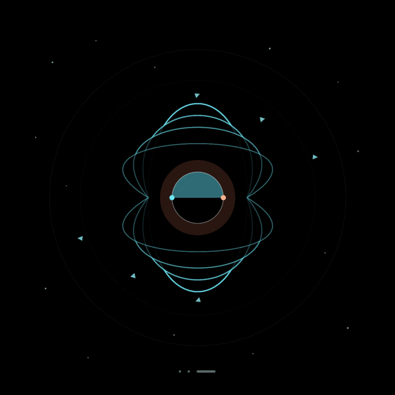

Magnetic-field animation
Surface Field of ZTFJ0118+4016
These two animations track how the visible surface magnetic field of the white dwarf ZTFJ0118+4016 changes with rotation from two different viewing geometries.
View
Side-on View

View
Line-of-Sight View
